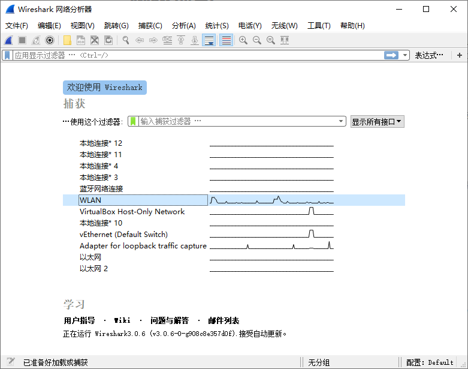
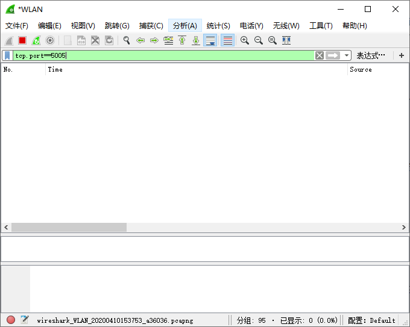

网络抓包
在开发过程中，当现场出现异常的时候，往往需要根据 SDK 与控制器之前的通讯数据来分析问题的原因。此时，就需要抓取通讯过程的网络数据包。而通常我们可以使用 wireshark 和 tcpdump。
1. 使用Wireshark
Wireshark 是一个功能强大的，免费且开源的网络数据抓取与分析软件。它可以支持 windows, linux, Macos 等操作系统，使用起来非常简单便捷。
1.1 下载与安装
可以从其官网（https://www.wireshark.org/）下载相应的安装包，即可完成安装
1.2 如何使用？
步骤1：
选择要抓取的网卡

步骤2:
设置相应的过滤的条件，对于单双色与字库系列控制器来说，一般采用 TCP 通讯，且控制器的端口为 5005。因此，可以使用以下过滤条件对网络的数据包进行过滤。
tcp.port==5005
如下图所示：

步骤3:
对抓取的数据包进行分析，或者将抓取的数据包发送给我们。
2. 使用Tcpdump
在实际项目部署时，由于很多服务器没有窗口系统，所以没有办法安装 wireshark。而此时，可以选择使用 tcpdump。
tcpdump是一个用于截取网络分组，并输出分组内容的工具。凭借强大的功能和灵活的截取策略，使其成为类UNIX系统下用于网络分析和问题排查的首选工具
tcpdump 支持针对网络层、协议、主机、网络或端口的过滤，并提供and、or、not等逻辑语句来帮助你去掉无用的信息。
通常我们可以使用以下命令对特定的网卡进行抓取，并将其保存成 .pcap 文件。而保存成 .pcap 文件可以让我们非常方便的使用 wireshark 对抓取的数据进行分析。
tcpdump -i eth0 -w dump.pcap
其中:
-i - 是指定要抓取的网卡 -w - 指定结果保存的位置
关于 tcpdump 的更多使用技巧，可自行搜索并获取。